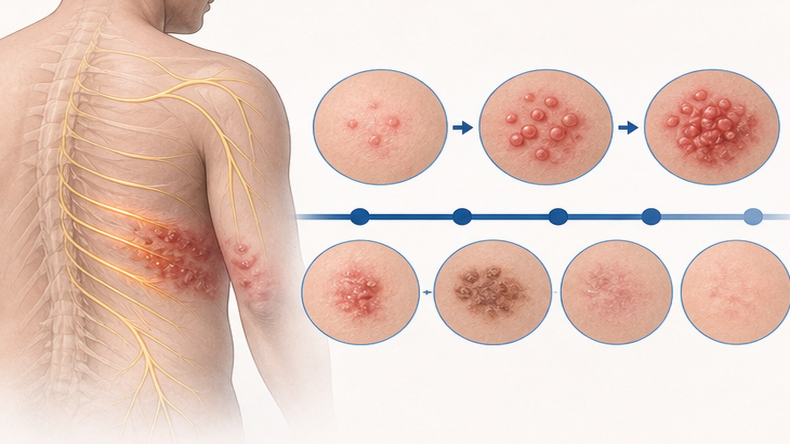
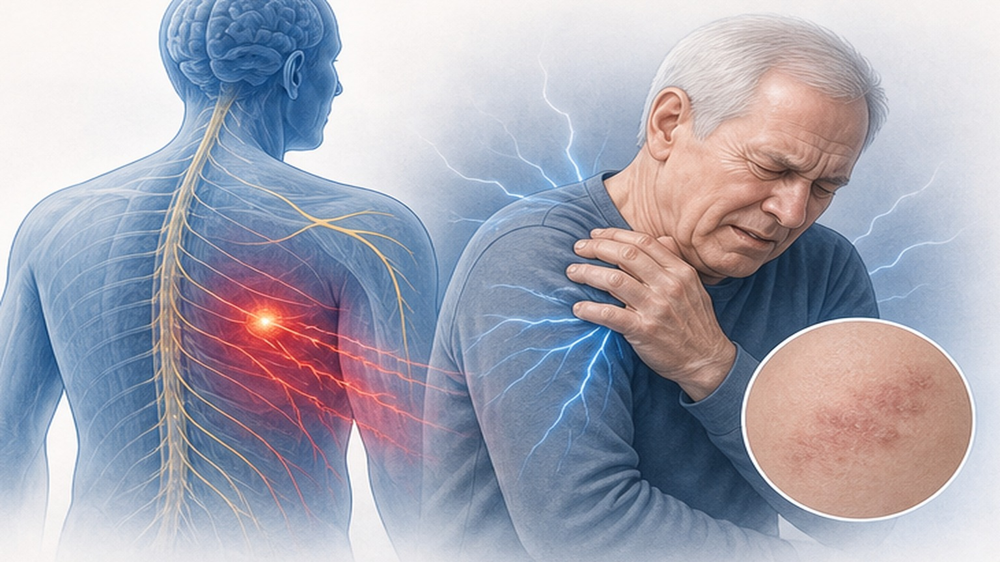
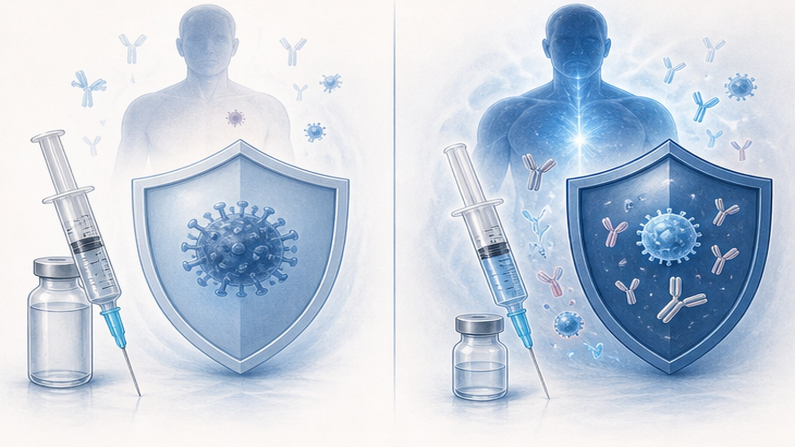
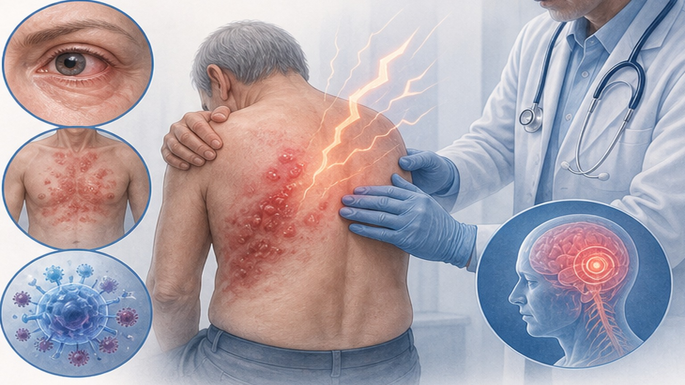

대상포진 (Herpes Zoster),
원인부터 예방까지
수두 바이러스 재활성화로 생기는 피부절 통증과 수포 — 72시간 골든타임과 Shingrix 백신을 알아봅니다
한국에서 매년 75만 명이 대상포진을 경험합니다
한국 발생률은 서구의 2배 이상 — 1,000명당 10.4명, 특히 50세 이후 급증합니다
대상포진 (Herpes Zoster) 이란
한쪽 피부절(dermatome)을 따라 띠처럼 나타나는 통증과 수포성 발진
VZV가 신경절에서 재활성화되어, 특정 신경이 지배하는 피부절(dermatome)을 따라 한쪽으로만 통증과 수포가 나타나는 질환입니다.
'Zoster'는 그리스어로 '허리띠'를 뜻합니다. 흉추(T3-L2)에서 가장 흔하며 (55%), 등에서 시작해 옆구리를 거쳐 가슴·배까지 띠처럼 감쌉니다. 등에 발진이 있는데 가슴이 아픈 것은 같은 신경이 연결된 정상 경과이며, 발진 1~5일 전 통증만 먼저 나타나 협심증·담석증·충수돌기염으로 오인되기도 합니다.
증상의 시간 경과 — 전구기에서 회복기까지
발진 출현 후 72시간 이내 항바이러스제 시작이 가장 중요합니다

항바이러스제와 통증 조절 약물
72시간 이내 항바이러스제 + 단계적 통증 관리 — 빠른 시작이 핵심
포진후신경통 (Postherpetic Neuralgia) 위험 인자
발진 후 90일 이상 지속되는 통증 — 80세 이상에서 32%, 50세 미만에서는 3%

백신 비교 — Zostavax vs Shingrix
Shingrix(재조합 백신)의 효능 97%는 Zostavax(생백신) 51%의 약 2배입니다
- 피하 1회 접종
- 50~69세 효능 약 70%
- 70대 41%, 80대 18%로 급격히 감소
- PHN 예방 효과 66.5%
- 10년 후 효능 15%까지 감소
- 면역저하자 사용 금기 — 한국 2024년 5월 공급 중단
- 근육 2회 접종 (0개월, 2~6개월)
- 50~69세 효능 97.2%
- 70세 이상에서도 91.3% 유지
- PHN 예방 효과 89~91%
- 11년 후에도 약 80% 효능 유지
- 면역저하자도 사용 가능 — 대한감염학회 2023 권고

Shingrix 실전 가이드 — 부작용·비용·접종 시점
대상포진을 앓았더라도 접종이 권고됩니다 — 회복 후 재발률 10년 누적 10% 이상
즉시 의료기관 방문이 필요한 경우
실명·청력손실·전신 감염을 막기 위해 지체 없이 응급 진료가 필요한 4가지 신호

일상 생활과 자주 묻는 질문
전염성·재발·복귀·위생 — 환자분들이 가장 궁금해하는 4가지
오늘 꼭 기억할 핵심 8가지
대상포진은 빨리 치료하고 미리 예방할수록 합병증을 줄일 수 있습니다
대상포진은 빨리 치료하고
미리 예방할 수 있습니다
72시간 골든타임을 지키고 Shingrix로 예방하세요 — 궁금한 점은 언제든 문의해 주세요
광교중앙로 298, 4층
토요일 08:30~13:30
같은 자료를 다시 볼 수 있어요